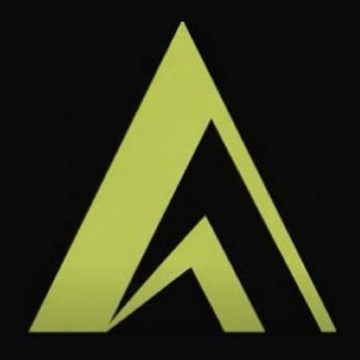

APEX icons: current vs sharp
The current app icons are soft (fuzzy edges and compression blotches); the 1024 px iOS icon looks upscaled from a smaller picture. The sharp set is the same mark redrawn as an exact vector (98.6% pixel overlap with today's icon), in today's colours, rendered crisp at every size. Nothing in the apps or the site uses it until Terrell says so.
iPhone app icon (1024 px)
Close-up, 3× (top of the mark)
Android launcher icon (512 px)

Home-screen and browser icons (180 px, 192 px)
Vector master: apex-mark.svg. The full set (iOS, Play Store, Android adaptive, web, maskable, favicon) is in the APEX repo under docs/brand-sharp/.